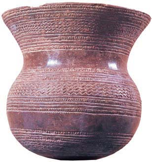

| Etapas | |
|---|---|
| Prehistoria | |
| Edad Antigua | |
| Edad Media | |
| Edad Moderna | |
| Edad Contemporánea | |
| Segunda República, Guerra Civil y franquismo | |
| Estatuto de Autonomía | |
| Antecedentes de la autonomía | |
| Reino de Castilla y León |
La revolución neolítica llegó al valle del Duero a partir del 4.000 a.C encontrándonos con ejemplos de megalitismo en la provincia de Zamora como el Dolmen de San Adrián o Los Zumacales en Simancas.
La Muralla de Pico de la Mora es calcolítica, y es una de las más antiguas del norte de la península.
Los vacceos era un pueblo agrícola colectivista cerealista, cuyos restos se han hallado en yacimientos como los de Soto de Medinilla y Pintia.
La cultura de Cogotas I, de la Edad del Bronce, se expande por toda la Meseta, y toma su nombre del yacimiento de Las Cogotas. Ese mismo yacimiento contiene cultura material de la Edad del Hierro.
La Edad del Cobre, también llamada Calcolítico es un período de la prehistoria ubicado entre el Neolítico y la Edad del Bronce
El cobre fue uno de los primeros metales que usó el hombre, utilizándolo inicialmente en su estado natural, el cobre nativo, ya que desconocía los mecanismos por los cuales se podía fundir el mineral. En estos primeros tiempos lo moldeaba gracias a las técnicas del martillado o del batido en frío, por lo que esta fase no es considerada todavía calcolítica sino neolítica. El perfeccionamiento de las técnicas cerámicas le permitió la experimentación con los procesos metalúrgicos, comenzando así a comprenderlos. Cuando ya los controlaba empezó a realizar diversas aleaciones con otros minerales, siendo las más habituales la mezcla con arsénico, primero, y la posterior con estaño, la cual dio lugar al bronce. También fueron usados el oro y la plata.
Se han hallado numerosos restos de la cultura del vaso campaniforme. Las personas de esta cultura vivían tanto en cuevas como en pequeños poblados, como los de El Picacho (Santo Domingo de Silos) y El Castillo (Castrogeriz), ambos en la provincia de Burgos. Los enterramientos encontrados cerca de los ríos Eresma y Tormes son individuales y en fosas. Estos grupos humanos, además de vasijas de cerámica, elaboraron puñales y puntas de flecha de cobre.
La Edad del Bronce es el período de la prehistoria en el que se desarrolló la metalurgia de este metal, resultado de la aleación de cobre con estaño. El término, que acuñó en 1820 el arqueólogo danés Christian Jürgensen Thomsen para clasificar en tres edades las colecciones de la Comisión Real para la Conservación de las Antigüedades de Copenhague, solo tiene valor cronológico en el Próximo Oriente y Europa, puesto que a la metalurgia se llegó a través de procesos distintos en las diferentes regiones del mundo. Su estudio se divide en Bronce Antiguo, Bronce Medio y Bronce Final. Aunque, generalmente, al bronce suele precederle una Edad del Cobre y seguirle una Edad del Hierro, esto no siempre fue así: en el África subsahariana, por ejemplo, se desarrolló la metalurgia del hierro sin pasar por las del cobre y bronce.
La tecnología relacionada con el bronce fue desarrollada en el Próximo Oriente a finales del IV milenio a. C.,fechándose en Asia Menor antes del 3000 a. C.; en la antigua Grecia se comenzó a utilizar a mediados del III milenio a. C.; en Asia Central el bronce se conocía alrededor del 2000 a. C., en Afganistán, Turkmenistán e Irán, aunque en China no comenzó a usarse hasta 1800 a. C., adoptándolo la dinastía Shang.
En una primera etapa de la Edad del Bronce los grupos humanos de la cuenca del Duero estaban dispersos y no se relacionaban con los de otras zonas. Los poblados se situaban en lugares de fácil defensa. Las viviendas tenían planta rectangular, con las esquinas redondeadas. La cubierta se sujetaba con postes de madera y las paredes se realizaban con ramas y barro. En el poblado de Cogeces del Monte (Valladolid), se han encontrado restos de una muralla. La economía se basaba en la agricultura (cereales) y en la ganadería (ovejas y cabras). A esta etapa pertenece la losa sepulcral de Tabuyo del Monte (León), que representa un ídolo con forma humana y dos armas (una alabarda1 y un puñal).
En una segunda etapa de la Edad del Bronce se ha demostrado que hubo un mayor contacto con otras comunidades, sobre todo atlánticas. Las viviendas de los poblados tenían paredes de barro y ramas sobre un zócalo de piedra. El suelo era de barro endurecido. Destacan los yacimientos de Valdevimbre (León) y Cogeces del Monte. En esta etapa se elaboraron diversos objetos metálicos (espadas con la hoja cóncava, navajas de afeitar, puntas de lanza…).
La Edad del Hierro es el período en el cual se descubre y populariza el uso del hierro como material para fabricar armas y herramientas. En algunas sociedades antiguas las tecnologías metalúrgicas necesarias para poder trabajar el hierro aparecieron en forma simultánea con otros cambios tecnológicos y culturales incluyendo muchas veces cambios en la agricultura, las creencias religiosas y los estilos artísticos aunque este no ha sido siempre el caso.
La Edad del Hierro es el último de los tres principales períodos en el sistema de las tres edades, utilizado para clasificar las sociedades prehistóricas, siendo precedido por la Edad del Bronce, asimismo la fecha de su aparición, duración y contexto varía según la región estudiada. La primera aparición conocida de sociedades con el nivel cultural y tecnológico correspondiente a la Edad del Hierro se da en el siglo XII a. C. en varios lugares: en el oriente próximo,en la antigua india y en europa.
En otras regiones europeas, el inicio de la Edad del Hierro fue muy posterior; no se desarrolló en Europa central hasta el siglo VIII a. C., y hasta el siglo VI a. C. en el norte de Europa. En África el primer exponente conocido del uso del hierro mediante fundición y forja se da en la cultura Nok, en la actual Nigeria, hacia el siglo XI a. C.
La Edad del Hierro en nuestra comunidad comienza en torno al 700 a. C. y finaliza en el año 133 a. C. En la Edad del Hierro se suelen diferenciar dos etapas:
Se considera comúnmente que la Edad del Hierro en Europa finaliza con la aparición de la escritura.La Edad del Hierro se dio aproximadamente cuando su producción se constituyó en la forma más sofisticada de la metalurgia. Si bien requiere una alta temperatura de fusión, su dureza y la abundancia de fuentes de mineral de hierro lo convirtieron en un material mucho más deseable y fácil de obtener que el bronce, lo que contribuyó de forma decisiva a su adopción como el metal más usado.Nunca hubo una Edad del Hierro propiamente dicha en América y Australasia, ya que en estas regiones las tecnologías para trabajarlo fueron introducidas por la colonización europea.
Durante la Primera Edad del Hierro (700 a. C.-500 a. C.):
Los grupos humanos vivían en castros, como los hallados en Soria (El Royo, Valdeavellano de Tera, Zarranzano…), rodeados por murallas de piedra que podían alcanzar hasta 4 m de altura. En algunos castros, las murallas contaban con torreones semicirculares o estaban rodeadas por fosos. A la entrada de los castros se colocaban grandes piedras hincadas en el suelo; eran piedras de aristas cortantes que sobresalían menos de un metro y se disponían muy cerca unas de otras, para dificultar un posible ataque.
La principal actividad económica era la ganadería (ovejas, cabras,vacas…); en menor medida se practicaban la agricultura (hortalizas,legumbres y cereales) y la caza.
El hierro se utilizaba para fabricar armas, como una espada larga y de filo muy cortante que fue adoptada posteriormente por los romanos. Sin embargo, se siguieron elaborando objetos de bronce, especialmente elementos de adorno como fíbulas, brazaletes, botones y hebillas de cinturón
Se elaboraba una gran variedad de vasijas de cerámica. Estas vasijas, realizadas a mano, eran de color negro, gris o pardo y no solían estar decoradas.
Durante la Segunda Edad del Hierro (500 a. C.-133 a. C.), los grupos humanos vivían en poblados situados en lugares fáciles de defender.Siguió siendo frecuente la colocación de barreras de piedras hincadas para la defensa del poblado.
En las áreas montañosas, los poblados estaban formados por viviendas rectangulares de piedra; en las áreas llanas las viviendas eran de adobe y de forma circular.
Se practicaban la agricultura y la ganadería. Esta época se caracteriza por la utilización masiva del hierro, con el que se elaboraban puñales,cuchillos, punzones, puntas de flecha…, y por el empleo del torno para la elaboración de cerámica; se han encontrado restos de cerámica en Ávila y Salamanca. La decoración de las vasijas solía realizarse presionando con un punzón sobre el barro húmedo.